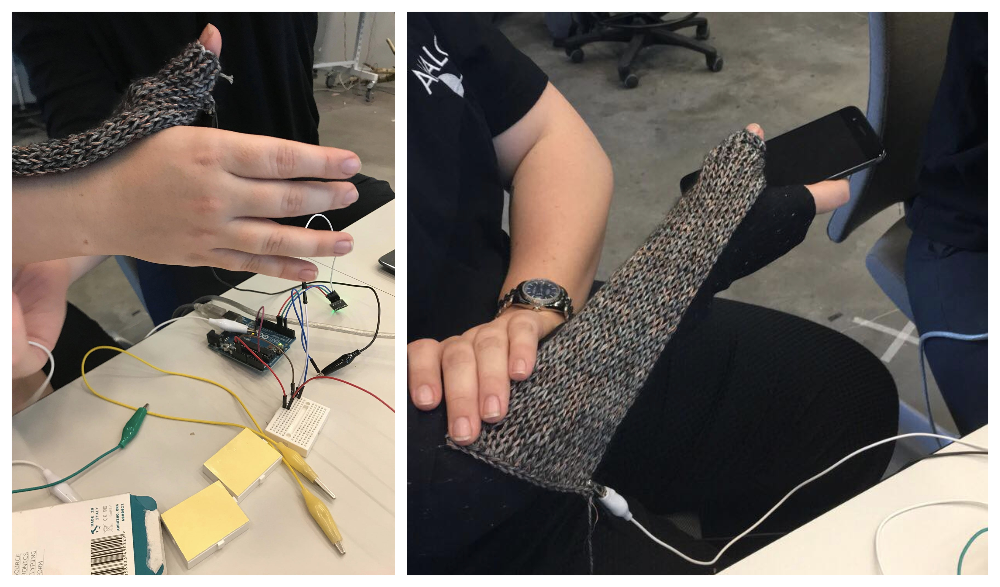
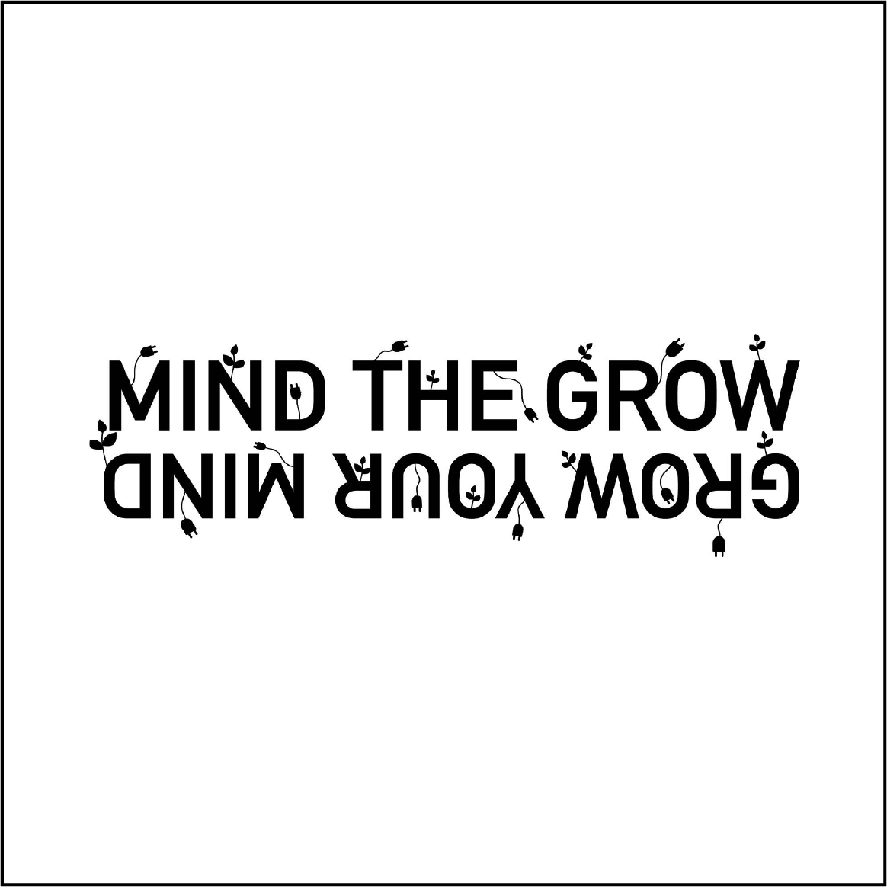

I am a digital designer with a passion for UX design, UX research. I have just finished my MSc in Digital Design and Interactive Technologies from the IT-University of Copenhagen.
My mind is creative and crooked nevertheless structured and constantly trying to “box” and organise new information. I am curious, humanity-centered and enjoy pushing the boundaries for digital experiences - both as an individual designer but also when working together within an interdisciplinary field of expertise. I am passionate about working within a field combining methods that are related to social science, art, software engineering, and humanities.
As a digital designer i find it valuable to engage in rapid and experimental processes as RtD (Research through Design) and design fiction to create digital solutions and experiences that goes further than "solving" the now to also engage in solving problems for the future. Preferably in sustainable and thoroughly though out ways. I love to practice design as a discipline that acts as modes of inquiry while combining creative practices of design with an analytic and structured mindset to develop truly great design solutions.
Last but not least I hope to design for "what out to be" rather than rebuilding what already is. The road towards "what out to be" is a winding road that has yet to be figured out.
For a more detailed description about previous work and places of work or anything else on your mind you can email me at natasha@varney.dk or call me on



